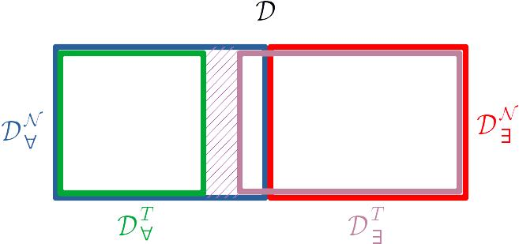

準備
定義 3.1任意の算術 $T$ に対して，$\mathcal{D}$ の部分集合 $\mathcal{D}^T_\exists$ と $\mathcal{D}^T_\forall$ を次のように定義します．
\(
\mathcal{D}^T_\exists
=
\{ \langle p,q \rangle \in \mathcal{D} \mid
T \vdash \exists{\vec{x}}(p(\vec{x})=q(\vec{x})) \}
\)
\( \mathcal{D}^T_\forall = \{ \langle p,q \rangle \in \mathcal{D} \mid T \vdash \forall{\vec{x}}\neg(p(\vec{x})=q(\vec{x})) \} \)
$\mathcal{D}^T_\exists$
は自然数解を持つことが $T$ において証明可能なD方程式の集合であり，
$\mathcal{D}^T_\forall$
は自然数解を持たないことが $T$ において証明可能なD方程式の集合です．■
上記の集合に対して次の命題が成り立ちます．
この命題は直感的に明らかだと言ったっら少し叱られるようにも思われますが，
詳細な証明は省略いたします．
命題 3.2\( \mathcal{D}^T_\forall = \{ \langle p,q \rangle \in \mathcal{D} \mid T \vdash \forall{\vec{x}}\neg(p(\vec{x})=q(\vec{x})) \} \)
計算的枚挙可能な任意の算術 $T$ に対して， $\mathcal{D}^T_\exists$ と $\mathcal{D}^T_\forall$ はともに計算的枚挙可能です． 略証 以下，$\mathcal{D}^T_\forall$ を受理するTM（チューリング機械）の概要を示します．$\mathcal{D}^T_\exists$ についても同様です．概要を示すための前提として，$T$ は計算的枚挙可能であるとします． さらに，記号列としての「$T$ における証明」を構成する記号からなる集合を $\mathcal{X}$ で表し，$\mathcal{X}$ 上の記号列全体を $\mathcal{X}^*$ で表します． まず最初に，算術の基盤にある述語論理を具体的に定め（例えば，自然演繹やヒルベルトの公理体系などを選び），「$T$ における証明」の構文を適切に定義すれば，$T$ を受理するTMを利用して次のようなTM $M_0$ が存在することを示せます．
-
$M_0$ はD方程式 $\langle p,q \rangle \in \mathcal{D}$ と記号列 $\alpha \in \mathcal{X}^*$ からなる順序3組 $\langle p,q,\alpha \rangle$ を入力として受け取って，次のように動作します．
-
$\alpha$ は
$\langle p,q \rangle \in \mathcal{D}^T_\forall$ であること（つまり，$T \vdash \forall{\vec{x}}\neg(p(\vec{x})=q(\vec{x}))$であること）の「$T$における証明」を表す記号列である
$\Longrightarrow$ $M_0$ は停止する． -
上記以外の場合，つまり $\alpha$ が $T \vdash \forall{\vec{x}}\neg(p(\vec{x})=q(\vec{x}))$ であることの「$T$における証明」を表す記号列でない
$\Longrightarrow$ $M_0$ は無限実行する．
-
$\alpha$ は
$\langle p,q \rangle \in \mathcal{D}^T_\forall$ であること（つまり，$T \vdash \forall{\vec{x}}\neg(p(\vec{x})=q(\vec{x}))$であること）の「$T$における証明」を表す記号列である
-
$M_1$ はD方程式 $\langle p,q \rangle \in \mathcal{D}$ と記号列 $\alpha \in \mathcal{X}^*$ と自然数 $t \in \mathbb{N}$ からなる順序4組 $\langle p,q,\alpha,t \rangle$ を入力として受け取って，次のように動作します．
-
$M_0$ が入力 $\langle p,q,\alpha \rangle$ に対して $t$ ステップ以内に停止する
$\Longrightarrow$ $M_1$ は入力 $\langle p,q,\alpha,t \rangle$ をacceptして停止する． -
$M_0$ が入力 $\langle p,q,\alpha \rangle$ に対して $t$ ステップ以内に停止しない
$\Longrightarrow$ $M_1$ は入力 $\langle p,q,\alpha,t \rangle$ をrejectして停止する．
-
$M_0$ が入力 $\langle p,q,\alpha \rangle$ に対して $t$ ステップ以内に停止する
-
$M_2$ はD方程式 $\langle p,q \rangle \in \mathcal{D}$ を入力として受け取って，
$t=1,2,\ldots$ に対して次の処理を繰り返します．
- for $i=1,2, \ldots, t$:
- if $M_1$ が入力 $\langle p,q,\alpha_i,t \rangle$ に対してacceptして停止する then $M_2$も停止する
- for $i=1,2, \ldots, t$:
- $\langle p,q \rangle \in \mathcal{D}^T_\forall$ ならば，その「$T$における証明」 $\alpha_j \in \mathcal{X}^*$ が存在します．従って，自然数 $k \in \mathbb{N}$ が存在して，$M_1$ は入力 $\langle p,q,\alpha_j,k \rangle$ をacceptして停止します．従ってまた，$t'=\max\{j,k\}$ とおくと，上記の $t$ に関するループは $t=t'$ のときに停止します．
- 一方，$\langle p,q \rangle \not\in \mathcal{D}^T_\forall$ ならば，$\langle p,q \rangle \in \mathcal{D}^T_\forall$ であることの「$T$における証明」は存在しないので，上記のforループ内の $M_1$ がacceptして停止することはありません．そのため，$M_2$も停止することはありません．つまり，上記の $t$ に関するループは無限実行します．
$\Pi_1^\mathcal{D}$-健全性
定義 3.3算術 $T$ が $\Pi_1^\mathcal{D}$-健全 であるということを，
-
任意のD方程式 $\langle p,q \rangle \in \mathcal{D}$ に対して
\( T \vdash \forall{\vec{x}}\neg(p(\vec{x})=q(\vec{x})) \Longrightarrow \mathcal{N} \models \forall{\vec{x}}\neg(p(\vec{x})=q(\vec{x})) \)
\(
\mathcal{D}^T_\forall \subseteq \mathcal{D}^\mathcal{N}_\forall
\)
が成り立つことと等価です．
定理 3.4$T$ を計算的枚挙可能で$\Pi_1^\mathcal{D}$-健全な算術とします． このとき，D方程式 $\langle p,q \rangle \in \mathcal{D}$ が存在して，
$\mathcal{N} \models \forall{\vec{x}}\neg(p(\vec{x})=q(\vec{x}))$
かつ
$T \not\vdash \forall{\vec{x}}\neg(p(\vec{x})=q(\vec{x}))$
が成り立ちます．つまり，$T$ は意味論的に不完全です．証明 $\Pi_1^\mathcal{D}$-健全性より，$\mathcal{D}^T_\forall \subseteq \mathcal{D}^\mathcal{N}_\forall$ が成り立ちます．さらに，$\mathcal{D}^T_\forall$ は計算的枚挙可能であり，MRDP定理の系より $\mathcal{D}^\mathcal{N}_\forall$ は計算的枚挙可能ではないので，$\mathcal{D}^T_\forall \not= \mathcal{D}^\mathcal{N}_\forall$ が成り立ちます． 従って，$\langle p,q \rangle \in \mathcal{D}^\mathcal{N}_\forall$ かつ $\langle p,q \rangle \not\in \mathcal{D}^T_\forall$ を満たすD方程式 $\langle p,q \rangle \in \mathcal{D}$ が存在します． このD方程式は上で述べた条件を満たします．■ 補足 3.4.1 上記の算術 $T$ に対して，差集合 $\mathcal{D}^\mathcal{N}_\forall - \mathcal{D}^T_\forall$ が有限集合だったと仮定すると，$\mathcal{D}^T_\forall$ は計算的枚挙可能なので $\mathcal{D}^\mathcal{N}_\forall = \mathcal{D}^T_\forall \cup (\mathcal{D}^\mathcal{N}_\forall - \mathcal{D}^T_\forall)$ も計算的枚挙可能になってしまいます．これはMRDP定理の系に反します． 従って， 差集合 $\mathcal{D}^\mathcal{N}_\forall - \mathcal{D}^T_\forall$ は無限集合です． つまり，上の定理の条件を満たすD方程式は無数に存在します．
$\Delta_0^\mathcal{D}$-完全性 ＆ 無矛盾性
定義 3.5算術 $T$ が $\Delta_0^\mathcal{D}$-完全 であるということを
-
任意のD方程式 $\langle p,q \rangle \in \mathcal{D}$ と 任意の自然数列 $\vec{a} \in \mathbb{N}^n$ に対して
- $\mathcal{N} \models p(\widehat{\vec{a}}) = q(\widehat{\vec{a}}) \Longrightarrow T \vdash p(\widehat{\vec{a}}) = q(\widehat{\vec{a}})$ かつ
- $\mathcal{N} \models \neg(p(\widehat{\vec{a}}) = q(\widehat{\vec{a}})) \Longrightarrow T \vdash \neg(p(\widehat{\vec{a}}) = q(\widehat{\vec{a}}))$
算術 $T$ が $\Sigma_1^\mathcal{D}$-完全 であるということを
-
任意のD方程式 $\langle p,q \rangle \in \mathcal{D}$ に対して
$\mathcal{N} \models \exists{\vec{x}}(p(\vec{x})=q(\vec{x})) \Longrightarrow T \vdash \exists{\vec{x}}(p(\vec{x})=q(\vec{x}))$
\(
\mathcal{D}^\mathcal{N}_\exists \subseteq \mathcal{D}^T_\exists
\)
が成り立つことと等価です．
■
定義 3.7算術 $T$ が 無矛盾 であるということを，
- $\mathcal{L}_A$ の任意の文 $\varphi$ に対して $T \not\vdash \varphi$ または $T \not\vdash \neg\varphi$
任意の算術 $T$ に対して
$T$ は $\Delta_0^\mathcal{D}$-完全 $\Longrightarrow$
$T$ は $\Sigma_1^\mathcal{D}$-完全
が成り立ちます．
証明
$T$ が$\Delta_0^\mathcal{D}$-完全だったとします．このとき，
任意のD方程式 $\langle p,q \rangle \in \mathcal{D}$ に対して次が成り立ちます．
\(
\begin{array}{lll}
&\mathcal{N} \models \exists{\vec{x}}(p(\vec{x})=q(\vec{x})) \\[2pt]
\Longrightarrow
&\mathcal{N} \models p(\widehat{\vec{a}})=q(\widehat{\vec{a}}))
~~\text{for some $\vec{a} \in \mathbb{N}^n$}
& \text{(真理条件の定義)} \\[2pt]
\Longrightarrow
& T \vdash p(\widehat{\vec{a}})=q(\widehat{\vec{a}}))
~~\text{for some $\vec{a} \in \mathbb{N}^n$}
& \text{($\Delta_0^\mathcal{D}$-完全性)} \\[2pt]
\Longrightarrow
& T \vdash \exists{\vec{x}}(p(\vec{x})=q(\vec{x}))
& \text{($\exists$-導入)} \\
\end{array}
\)
よって，$T$ は$\Sigma_1^\mathcal{D}$-完全です．■
定理 3.9任意の算術 $T$ に対して次が成り立ちます．
- $T$ は$\Pi_1^\mathcal{D}$-健全である $\Longrightarrow$ $T$ は無矛盾である
- $T$ は$\Delta_0^\mathcal{D}$-完全かつ無矛盾である $\Longrightarrow$ $T$ は$\Pi_1^\mathcal{D}$-健全である
\(
\begin{array}{lll}
&\mathcal{N} \models \exists{\vec{x}}(p(\vec{x})=q(\vec{x})) \\[2pt]
\Longrightarrow
&\mathcal{N} \not\models \forall{\vec{x}}\neg(p(\vec{x})=q(\vec{x}))
& \text{(真理条件の定義)} \\[2pt]
\Longrightarrow
& T \not\vdash \forall{\vec{x}}\neg(p(\vec{x})=q(\vec{x}))
& \text{($\Pi_1^\mathcal{D}$-健全性)} \\[2pt]
\end{array}
\)
これはD方程式 $\langle p,q \rangle \in \mathcal{D}$ が自然数解を持つとき，
「それが自然数解を持たない」ということを $T$ が証明できないことを示しています．
従って，例えば， D方程式 $x=x$ は明らかに自然数解を持つので，
$T \not\vdash \forall{x}\neg(x=x)$
が成り立ちます．よって，$T$ は無矛盾です．
(2)
$T$ が$\Delta_0^\mathcal{D}$-完全かつ無矛盾だったとします．このとき，
任意のD方程式 $\langle p,q \rangle \in \mathcal{D}$ に対して次が成り立ちます．
\(
\begin{array}{lll}
&\mathcal{N} \not\models \forall{\vec{x}}\neg(p(\vec{x})=q(\vec{x})) \\[2pt]
\Longrightarrow
&\mathcal{N} \models \exists{\vec{x}}(p(\vec{x})=q(\vec{x}))
& \text{(真理条件の定義)} \\[2pt]
\Longrightarrow
& T \vdash \exists{\vec{x}}(p(\vec{x})=q(\vec{x}))
& \text{($\Sigma_1^\mathcal{D}$-完全性 via 補題3.8)} \\[2pt]
\Longrightarrow
& T \not\vdash \neg\exists{\vec{x}}(p(\vec{x})=q(\vec{x}))
& \text{(無矛盾性)} \\[2pt]
\Longrightarrow
& T \not\vdash \forall{\vec{x}}\neg(p(\vec{x})=q(\vec{x}))
& \text{(ド・モルガンの法則)} \\[2pt]
\end{array}
\)
この対偶を取ることによって
\(
T \vdash \forall{\vec{x}}\neg(p(\vec{x})=q(\vec{x}))
\Longrightarrow
\mathcal{N} \models \forall{\vec{x}}\neg(p(\vec{x})=q(\vec{x})) \\[2pt]
\)
が得られます．よって，$T$ は$\Pi_1^\mathcal{D}$-健全です．
■
補足
上記の「ド・モルガンの法則」は，
算術 $T$ における証明の中で述語論理のド・モルガンの法則を利用することによって
$\forall{\vec{x}}\neg(p(\vec{x})=q(\vec{x}))$
から
$\neg\exists{\vec{x}}(p(\vec{x})=q(\vec{x}))$
が演繹できることを示しています．上ではこれの対偶を利用しています．
■
上の定理と定理3.4から次の系が直ちに得られます．
系 3.9.1計算的枚挙可能かつ$\Delta_0^\mathcal{D}$-完全かつ無矛盾な算術は意味論的に不完全です． ■ 補足 上記の条件を満たす算術が「構文論的に」不完全なのかどうかは筆者には分かりません．
$\Delta_0^\mathcal{D}$-完全性 ＆ $\Sigma_1^\mathcal{D}$-健全性
定義 3.10算術 $T$ が $\Sigma_1^\mathcal{D}$-健全 であるということを，
-
任意のD方程式 $\langle p,q \rangle \in \mathcal{D}$ に対して
\( T \vdash \exists{\vec{x}}(p(\vec{x})=q(\vec{x})) \Longrightarrow \mathcal{N} \models \exists{\vec{x}}(p(\vec{x})=q(\vec{x})) \)
\(
\mathcal{D}^T_\exists \subseteq \mathcal{D}^\mathcal{N}_\exists
\)
が成り立つことと等価です．
■
定理 3.11$\Delta_0^\mathcal{D}$-完全かつ$\Sigma_1^\mathcal{D}$-健全な任意の算術 $T$ に対して次が成り立ちます．
- $T$ は無矛盾です．従ってまた，$T$ は $\Pi_1^\mathcal{D}$-健全でもあります．
- $ \mathcal{D}_\forall^\mathcal{N} - \mathcal{D}_\forall^T = \mathcal{D}-(\,\mathcal{D}^T_\exists \cup \mathcal{D}^T_\forall\,)$ $ = \{ \langle p,q \rangle \in \mathcal{D} \mid T \not\vdash \exists{\vec{x}}(p(\vec{x})=q(\vec{x})) ~\text{かつ}~ T \not\vdash \neg\exists{\vec{x}}(p(\vec{x})=q(\vec{x})) \} $
\(
\begin{array}{lll}
& \mathcal{N} \models \forall{\vec{x}}\neg(p(\vec{x})=q(\vec{x})) \\
\Longrightarrow
& \mathcal{N} \not\models \exists{\vec{x}}(p(\vec{x})=q(\vec{x})) \\
\Longrightarrow
& T \not\vdash \exists{\vec{x}}(p(\vec{x})=q(\vec{x}))
& \text{（$\Sigma_1^\mathcal{D}$-健全性）}\\
\end{array}
\)
つまり，任意のD方程式
$\langle p,q \rangle \in \mathcal{D}_\forall^\mathcal{N}$
に対して
$T \not\vdash \exists{\vec{x}}(p(\vec{x})=q(\vec{x}))$
が成り立ちます．従って，例えば
$\langle x,x+\widehat{1} \rangle \in \mathcal{D}_\forall^\mathcal{N}$
なので，
$T \not\vdash \exists{x}(x = x + \widehat{1})$
が成り立ちます，よって，$T$ は無矛盾です．
従ってまた，定理3.9より $T$ は $\Pi_1^\mathcal{D}$-健全でもあります．
(2)
$\Sigma^\mathcal{D}_1$-完全性（補題3.8）と$\Sigma^\mathcal{D}_1$-健全性より
- $\mathcal{D}^T_\exists = \mathcal{D}^\mathcal{N}_\exists$
- $\mathcal{D}_\forall^\mathcal{N} = \mathcal{D}-\mathcal{D}^\mathcal{N}_\exists$
\(
\begin{array}{lcl}
\mathcal{D}_\forall^\mathcal{N} - \mathcal{D}^T_\forall
&=& (\mathcal{D}-\mathcal{D}^\mathcal{N}_\exists) - \mathcal{D}^T_\forall \\
&=& \mathcal{D} - (\mathcal{D}^\mathcal{N}_\exists \cup \mathcal{D}^T_\forall) \\
&=& \mathcal{D}-(\,\mathcal{D}^T_\exists \cup \mathcal{D}^T_\forall\,)
\end{array}
\)
が得られます．従って，
$\mathcal{D}^T_\exists$ と $\mathcal{D}^T_\forall$ の定義（とド・モルガンの法則）から
\(
\mathcal{D}_\forall^\mathcal{N} - \mathcal{D}_\forall^T
= \{ \langle p,q \rangle \in \mathcal{D} \mid
T \not\vdash \exists{\vec{x}}(p(\vec{x})=q(\vec{x})) ~\text{かつ}~
T \not\vdash \neg\exists{\vec{x}}(p(\vec{x})=q(\vec{x})) \}
\)
となります．
■
余談
上記の(2)は次のように形式的に証明することもできます．
任意のD方程式 $\langle p,q \rangle \in \mathcal{D}$ に対して：
\(
\begin{array}{lll}
& \langle p,q \rangle \in \mathcal{D}_\forall^\mathcal{N} - \mathcal{D}_\forall^T \\
\iff
& \mathcal{N} \models \forall{\vec{x}}\neg(p(\vec{x})=q(\vec{x}))
~\text{かつ}~
T \not\vdash \forall{\vec{x}}\neg(p(\vec{x})=q(\vec{x}))
& \text{（各集合の定義）} \\
\iff
& \mathcal{N} \not\models \exists{\vec{x}}(p(\vec{x})=q(\vec{x}))
~\text{かつ}~
T \not\vdash \forall{\vec{x}}\neg(p(\vec{x})=q(\vec{x}))
& \text{（真理条件の定義）} \\
\iff
& T \not\vdash \exists{\vec{x}}(p(\vec{x})=q(\vec{x}))
~\text{かつ}~
T \not\vdash \forall{\vec{x}}\neg(p(\vec{x})=q(\vec{x}))
& \text{（$\Sigma_1^\mathcal{D}$-健全性と$\Sigma_1^\mathcal{D}$-完全性）} \\
\iff
& T \not\vdash \exists{\vec{x}}(p(\vec{x})=q(\vec{x}))
~\text{かつ}~
T \not\vdash \neg\exists{\vec{x}}(p(\vec{x})=q(\vec{x}))
& \text{（ド・モルガンの法則）} \\
\end{array}
\)
なお，上記の$\Sigma_1^\mathcal{D}$-完全性は補題3.8によります．
■
系 3.11.1計算的枚挙可能かつ$\Delta_0^\mathcal{D}$-完全かつ$\Sigma_1^\mathcal{D}$-健全な算術 $T$ は構文論的に不完全です． 証明 系2.5より $\mathcal{D}_\forall^\mathcal{N}$ は計算的枚挙可能ではありません． 一方，$T$ が計算的枚挙可能なので $\mathcal{D}_\forall^T$ は計算的枚挙可能です． 従って， $\mathcal{D}_\forall^\mathcal{N} \not= \mathcal{D}_\forall^T$ が成り立ちます．更に，定理3.11(1)より $T$ は$\Pi_1^\mathcal{D}$-健全なので， $\mathcal{D}_\forall^T \subseteq \mathcal{D}_\forall^\mathcal{N}$ が成り立ちます． よって， $\mathcal{D}_\forall^\mathcal{N} - \mathcal{D}_\forall^T \not= \emptyset$ が成り立ちます． これと定理3.11(2)より $T$ は構文論的に不完全であることが分かります． ■
$\Delta_0^\mathcal{D}$-完全性 ＆ $\omega^\mathcal{D}$-無矛盾性
定義 3.12算術 $T$ が $\omega^\mathcal{D}$-矛盾 であるということを
- D方程式 $\langle p,q \rangle \in \mathcal{D}$ が存在して
- $T \vdash \exists{\vec{x}}(p(\vec{x})=q(\vec{x}))$ かつ
- $T \vdash \neg(p(\widehat{\vec{a}}) = q(\widehat{\vec{a}}))$ for all $\vec{a} \in \mathbb{N}$
- 任意のD方程式 $\langle p,q \rangle \in \mathcal{D}$ に対して
- $T \not\vdash \exists{\vec{x}}(p(\vec{x})=q(\vec{x}))$ または
- $T \not\vdash \neg(p(\widehat{\vec{a}}) = q(\widehat{\vec{a}}))$ for some $\vec{a} \in \mathbb{N}^n$
$\Delta_0^\mathcal{D}$-完全な任意の算術 $T$ に対して次が成り立ちます．
$T$ は$\Sigma_1^\mathcal{D}$-健全である
$\iff$
$T$ は$\omega^\mathcal{D}$-無矛盾である
証明
($\Longrightarrow$)
$T$ を$\Sigma_1^\mathcal{D}$-健全とします．
このとき，任意のD方程式 $\langle p,q \rangle \in \mathcal{D}$ に対して次が成り立ちます．
\(
\begin{array}{lll}
& T \vdash \exists{\vec{x}}(p(\vec{x})=q(\vec{x})) \\
\Longrightarrow
& \mathcal{N} \models \exists{\vec{x}}(p(\vec{x})=q(\vec{x}))
& \text{（$\Sigma_1^\mathcal{D}$-健全性）} \\
\Longrightarrow
& \mathcal{N} \models p(\widehat{\vec{a}})=q(\widehat{\vec{a}})
~~\text{for some $\vec{a} \in \mathbb{N}^n$}
& \text{（真理条件の定義）} \\
\Longrightarrow
& T \vdash p(\widehat{\vec{a}})=q(\widehat{\vec{a}})
~~\text{for some $\vec{a} \in \mathbb{N}^n$}
& \text{（$\Delta_0^\mathcal{D}$-完全性）} \\
\Longrightarrow
& T \not\vdash \neg(p(\widehat{\vec{a}})=q(\widehat{\vec{a}}))
~~\text{for some $\vec{a} \in \mathbb{N}^n$}
& \text{（ 無矛盾性 via 定理3.11(1) ）} \\
\end{array}
\)
よって，$T$ は$\omega^\mathcal{D}$-無矛盾です．
($\Longleftarrow$)
$T$ を$\omega^\mathcal{D}$-無矛盾とします．
このとき，任意のD方程式 $\langle p,q \rangle \in \mathcal{D}$ に対して次が成り立ちます．
\(
\begin{array}{lll}
& \mathcal{N} \not\models \exists{\vec{x}}(p(\vec{x})=q(\vec{x})) \\
\Longrightarrow
& \mathcal{N} \models \forall{\vec{x}}\neg(p(\vec{x})=q(\vec{x}))
& \text{（真理条件の定義）} \\
\Longrightarrow
& \mathcal{N} \models \neg(p(\widehat{\vec{a}})=q(\widehat{\vec{a}}))
~~\text{for all $\vec{a} \in \mathbb{N}^n$}
& \text{（真理条件の定義）} \\
\Longrightarrow
& T \vdash \neg(p(\widehat{\vec{a}})=q(\widehat{\vec{a}}))
~~\text{for all $\vec{a} \in \mathbb{N}^n$}
& \text{（$\Delta_0^\mathcal{D}$-完全性）} \\
\Longrightarrow
& T \not\vdash \exists{\vec{x}}(p(\vec{x})=q(\vec{x}))
& \text{（$\omega^\mathcal{D}$-無矛盾性）} \\
\end{array}
\)
この対偶を取ることによって
\(
T \vdash \exists{\vec{x}}(p(\vec{x})=q(\vec{x}))
\Longrightarrow
\mathcal{N} \models \exists{\vec{x}}(p(\vec{x})=q(\vec{x})) \\
\)
が得られます．
よって，$T$ は$\Sigma_1^\mathcal{D}$-健全です．
■
この定理と系3.11.1より次の系が直ちに得られます．
系 3.13.1計算的枚挙可能かつ$\Delta_0^\mathcal{D}$-完全かつ$\omega^\mathcal{D}$-無矛盾な算術 $T$ は構文論的に不完全です． ■
十分条件のまとめ
$\Delta_0^\mathcal{D}$-完全な算術に関して， これまで扱ってきた諸条件の関係性をまとめると次のようになります．
\(
\begin{array}{clcr}
& \text{$\Pi_1^\mathcal{D}$-健全性}
~\iff~
\text{無矛盾性} &~~~~& \cdots\cdots(1) \\
\Longleftarrow
& \text{$\Sigma_1^\mathcal{D}$-健全性}
~\iff~
\text{$\omega^\mathcal{D}$-無矛盾性} &~~~~& \cdots\cdots(2) \\
\end{array}
\)
下記の命題は，上の条件(1)から条件(2)が導けないことを示しています．
命題 3.14（無矛盾だが$\omega^\mathcal{D}$-矛盾な算術）$T$ を計算的枚挙可能かつ$\Delta_0^\mathcal{D}$-完全かつ$\Pi_1^\mathcal{D}$-健全な算術とします．このとき，定理3.4より$\mathcal{D}_\forall^\mathcal{N} - \mathcal{D}_\forall^T \not= \emptyset$ が成り立ちます．そこで，D方程式 $\langle p,q \rangle \in \mathcal{D}_\forall^\mathcal{N} - \mathcal{D}_\forall^T$ を任意に取ってきて
$T_1 = T \cup \{ \exists{\vec{x}}(p(\vec{x})=q(\vec{x})) \}$
とおきます．このとき，$T_1$ は無矛盾だが$\omega^\mathcal{D}$-矛盾な算術になります．
証明
$T_1$ と上記のD方程式 $\langle p,q \rangle \in \mathcal{D}_\forall^\mathcal{N} - \mathcal{D}_\forall^T$ に対して次が成り立ちます．
\(
\begin{array}{lll}
& T_1 \vdash \forall{\vec{x}}\neg(p(\vec{x})=q(\vec{x})) \\
\Longrightarrow
& T \cup \{ \exists{\vec{x}}(p(\vec{x})=q(\vec{x})) \} \vdash \forall{\vec{x}}\neg(p(\vec{x})=q(\vec{x}))
& \text{（$T_1$ の定義）}\\
\Longrightarrow
& T \vdash \exists{\vec{x}}(p(\vec{x})=q(\vec{x})) \rightarrow \forall{\vec{x}}\neg(p(\vec{x})=q(\vec{x}))
& \text{（演繹定理）} \\
\Longrightarrow
& T \vdash \neg\exists{\vec{x}}(p(\vec{x})=q(\vec{x})) \lor \forall{\vec{x}}\neg(p(\vec{x})=q(\vec{x}))
& \text{（含意の定義）} \\
\Longrightarrow
& T \vdash \forall{\vec{x}}\neg(p(\vec{x})=q(\vec{x}))
& \text{（ド・モルガンの法則や$\lor$-除去）} \\
\end{array}
\)
一方，
$\langle p,q \rangle \not\in \mathcal{D}_\forall^T$
なので
$T \not\vdash \forall{\vec{x}}\neg(p(\vec{x})=q(\vec{x}))$
が成り立ちます．これと上記の対偶から，
$T_1 \not\vdash \forall{\vec{x}}\neg(p(\vec{x})=q(\vec{x}))$
が得られます．よって，
$T_1$
は無矛盾です．
次に，
(a)
$T_1 \vdash \exists{\vec{x}}(p(\vec{x})=q(\vec{x}))$
が成り立つことは明らかです．さらに
$\langle p,q \rangle \in \mathcal{D}_\forall^\mathcal{N}$
なので
$\mathcal{N} \models \forall{\vec{x}}\neg(p(\vec{x})=q(\vec{x}))$
が成り立ち，その上さらに
\(
\begin{array}{lll}
& \mathcal{N} \models \forall{\vec{x}}\neg(p(\vec{x})=q(\vec{x})) \\
\Longrightarrow
& \mathcal{N} \models \neg(p(\widehat{\vec{a}})=q(\widehat{\vec{a}})) ~\text{for all $\vec{a} \in \mathbb{N}^n$}
& \text{（真理条件の定義）} \\
\Longrightarrow
& T \vdash \neg(p(\widehat{\vec{a}})=q(\widehat{\vec{a}})) ~\text{for all $\vec{a} \in \mathbb{N}^n$}
& \text{（$\Delta_0^\mathcal{D}$-完全性）} \\
\Longrightarrow
& T_1 \vdash \neg(p(\widehat{\vec{a}})=q(\widehat{\vec{a}})) ~\text{for all $\vec{a} \in \mathbb{N}^n$}
& \text{（自明）} \\
\end{array}
\)
が成り立つので，
(b)
$T_1 \vdash \neg(p(\widehat{\vec{a}})=q(\widehat{\vec{a}}))$ for all $\vec{a} \in \mathbb{N}^n$
が成り立ちます．よって，$T_1$ は$\omega^\mathcal{D}$-矛盾です．
■
D方程式の窓から見た景色数値的な計算（変数を含まない等式や非等式の証明）が正しく行えて，無矛盾な算術のことを，仮に，「合理的な算術」と呼ぶことにします．$\Delta^\mathcal{D}_0$-完全性は数値的な計算が正しく行えることの必要条件と考えることができます．従って，ここで言う合理的な算術は$\Delta^\mathcal{D}_0$-完全であると言えます．従って，補題3.8より，合理的な算術は$\Sigma^\mathcal{D}_1$-完全でもあります． さらに，無矛盾性より，$\Pi^\mathcal{D}_1$-健全でもあります． 以上をまとめると，D方程式全体 $\mathcal{D}$ と合理的な算術 $T$ に関して次が成り立つことになります．
- $\mathcal{D} = \mathcal{D}^\mathcal{N}_\forall \cup \mathcal{D}^\mathcal{N}_\exists$， $\mathcal{D}^\mathcal{N}_\forall \cap \mathcal{D}^\mathcal{N}_\exists = \emptyset$
- $\mathcal{D}^T_\forall \subsetneq \mathcal{D}^\mathcal{N}_\forall$
- $\mathcal{D}^\mathcal{N}_\exists \subseteq \mathcal{D}^T_\exists$

D方程式に基づく意味論的不完全性は
$\mathcal{D}^T_\forall \subsetneq \mathcal{D}^\mathcal{N}_\forall$
であることから必ず成り立つと言えます．一方，構文論的不完全性（注：あくまでD方程式に基づく構文論的不完全性）は，上図の斜線部が空でないときに成立します．言い方を変えると，
$\mathcal{D}^T_\exists$
は
$\mathcal{D}^\mathcal{N}_\forall - \mathcal{D}^T_\forall$
の領域へその勢力を伸ばしていく可能性があるのですが，その勢力を途中で抑えることができれば構文論的な不完全性が成立することになります．その勢力を抑える一つの条件は
$\Sigma^\mathcal{D}_1$-健全性または$\omega^\mathcal{D}$-無矛盾性です．
これらの条件は
$\mathcal{D}^T_\exists$
の勢力を
$\mathcal{D}^\mathcal{N}_\exists$（上図の赤枠）
の中に閉じ込めてしまいます．それゆえに構文論的不完全性が成立します．
しかしながら，少なくとも筆者にはこれら以外の条件は分かりません．
計算理論的な観点から言えば，
$\mathcal{D}^T_\forall$
や
$\mathcal{D}^T_\exists$
や
$\mathcal{D}^T_\forall \cup \mathcal{D}^T_\exists$
など（の一つ）が計算不可能であることが示せればよいのですが，そういったことが示せるのかどうかも分かりません．こういったことを理解すべく，勉強を続けていこうと思います．